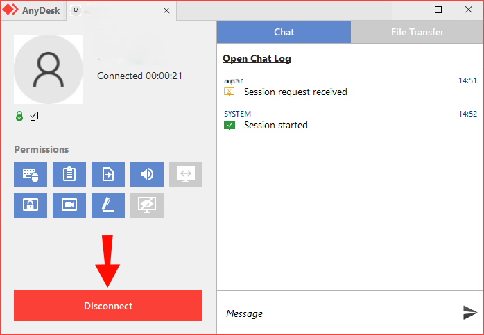
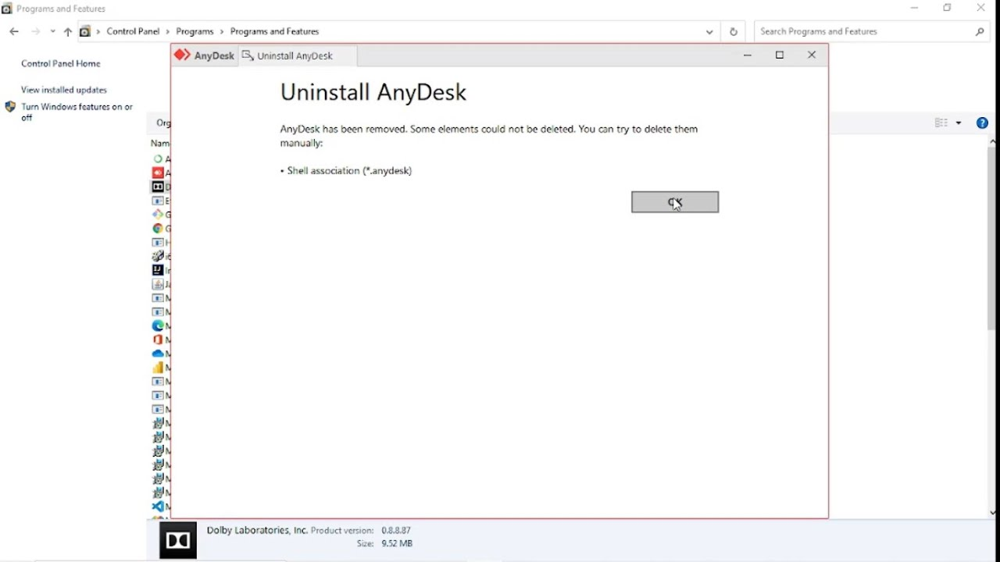

How to Stop AnyDesk Access: A Comprehensive Guide
Remote access tools like AnyDesk have revolutionized how we manage devices and provide support. However, these tools also pose potential risks if misused by unauthorized users or hackers. If you're concerned about your data security or privacy, understanding how to stop AnyDesk access is essential. This guide will walk you through the process, ensuring your devices remain safe from prying eyes.
1. Why Stop AnyDesk Access?
How Does AnyDesk Work?
AnyDesk is a remote desktop application that enables users to connect to and control other devices from anywhere. With its unique ID system, AnyDesk ensures quick access and seamless file sharing. While it’s a powerful tool for remote IT support and personal use, it can become a security risk if misused.
When improperly managed, AnyDesk can grant unauthorized individuals access to your device. Scammers often exploit this tool by tricking users into granting remote access. Understanding its functionality is the first step to protecting yourself from such threats.
Why Should You Stop AnyDesk Access?
Disabling AnyDesk is a proactive step to protect your devices and personal information from various threats. While the software is designed for legitimate uses, it can also be exploited in harmful ways if not properly managed. Here are some compelling reasons why stopping AnyDesk access, especially when it’s not in active use, is crucial:
1. Security Risks
One of the most significant concerns with AnyDesk is the potential for cybercriminals to misuse it. Hackers often exploit remote access tools like AnyDesk to gain unauthorized entry into devices. Once inside, they can install malware, harvest sensitive information, or monitor your activities without your knowledge. This opens the door to financial fraud, identity theft, or system compromise. For instance, phishing scams may trick users into granting access, allowing attackers to wreak havoc. By disabling AnyDesk, you reduce the risk of these malicious activities.
2. Privacy Concerns
During remote sessions, sensitive information stored on your device, such as personal files, financial documents, or work-related data, is vulnerable. Even if you’re cautious, the simple act of sharing control over your device can expose critical details to unintended parties. This can be particularly problematic in corporate settings, where confidential data could be at stake. Disabling AnyDesk when it’s not required ensures that your private information stays private, safeguarding your personal and professional interests.
3. Misuse by Others
Even trusted individuals, such as friends, family members, or colleagues, might unintentionally misuse AnyDesk. For example, someone might initiate a remote session without fully understanding its consequences, potentially altering or deleting important files. Additionally, if your AnyDesk credentials are stored or shared, anyone with access could connect to your device without your permission. These accidental intrusions can lead to significant inconvenience or data loss. By stopping AnyDesk access, you maintain complete control over who can interact with your device.
2. How to Stop AnyDesk Access
Stopping AnyDesk access is essential for maintaining your device’s security, especially if you suspect it is being misused or no longer need the application. AnyDesk is a powerful tool, but its capability to grant full control over your computer or mobile device can turn into a vulnerability if left unchecked. Whether you’re looking to temporarily block access or remove AnyDesk entirely, there are multiple methods you can use to ensure your system stays safe.
Disconnecting AnyDesk Active Sessions

If someone is remotely controlling your device, follow these steps to end the session:
- Look for the AnyDesk application running on your screen.
- In the session window, locate the Disconnect button (usually red).
- Click the Disconnect button to stop the remote connection.
- If the button is unavailable, close the AnyDesk window entirely to end the session.
These steps immediately restore full control of your device.
Disabling AnyDesk Temporarily
Disabling AnyDesk temporarily is an effective way to stop it without removing the application altogether. This option is particularly useful if you need to use AnyDesk occasionally but want to ensure it doesn’t run in the background or automatically launch at startup.
To achieve this, you can manually close the application and disable it from starting with your system. This stops AnyDesk from being used unless you intentionally open it. Disabling AnyDesk also helps conserve system resources by preventing unnecessary processes. Here’s how you can do this on both Windows and macOS devices:
Steps for Windows
- Open the Task Manager by pressing
Ctrl + Shift + Esc. - Navigate to the Startup tab.
- Locate AnyDesk in the list of startup applications.
- Right-click on it and select Disable to stop it from launching at boot.
Steps for macOS
- Go to System Preferences and select Users & Groups.
- Click on your user account and then navigate to the Login Items tab.
- Find AnyDesk in the list of login items, select it, and click the Minus (-) button to remove it.
Uninstalling AnyDesk Completely
If you no longer need AnyDesk on your device, uninstalling it is the most straightforward way to stop access permanently. This method ensures that no one, including you, can use the application unless it’s reinstalled. However, it’s important to remove all residual files after uninstalling the application to prevent any unwanted configurations or settings from remaining on your system.
Steps for Windows

- Open the Control Panel and navigate to Programs and Features.
- Locate AnyDesk in the list of installed programs.
- Right-click on AnyDesk and select Uninstall.
- After uninstalling, delete any leftover files in the following folders:
- C:\\Program Files (x86)\\AnyDesk
- C:\\Users\\[Your Username]\\AppData\\Roaming\\AnyDesk
Steps for macOS
- Open the Applications folder and drag AnyDesk to the Trash.
- Empty the Trash to remove the application.
- Open Finder, press
Cmd + Shift + G, and type~/Library. - Delete all files related to AnyDesk from Application Support, Preferences, and Caches.
Steps for Mobile (iPhone & Android)
*** For iPhone:
- Long-press the AnyDesk app on your Home Screen.
- Tap Remove App and confirm by selecting Delete App.
- Check your subscriptions in the App Store and cancel any related ones if active.
*** For Android:
- Go to Settings > Apps.
- Select AnyDesk and tap Uninstall.
Blocking AnyDesk via Firewall or Network
Another effective way to stop AnyDesk access is by restricting its ability to connect to the internet. This method prevents the application from initiating or receiving remote connections, rendering it non-functional even if installed.
Configuring a Firewall
A firewall can block AnyDesk's executable files, ensuring that the application cannot communicate with external servers.
*** On Windows:
- Open Windows Defender Firewall and click Advanced Settings.
- Go to Outbound Rules and click New Rule.
- Select Program and specify the path to the AnyDesk executable file.
- Block the program and save the settings.
*** On macOS:
- Go to System Preferences > Security & Privacy > Firewall Options.
- Add AnyDesk to the blocked list and save changes.
Blocking AnyDesk on Your Router
Network-level blocking can be performed via your router to stop AnyDesk access across all devices connected to your network.
- Log in to your router’s admin panel (usually at
192.168.1.1). - Navigate to the Parental Controls or Access Control section.
- Add AnyDesk’s domain (
*.anydesk.com) to the blocklist. - Save changes and restart your router.
Removing Administrative Privileges
Another preventative measure is to restrict AnyDesk’s administrative privileges. Without admin rights, AnyDesk cannot perform many of its functions, including installing updates or accessing sensitive areas of your system.
- Open the Properties window of AnyDesk (Right-click > Properties on Windows).
- Go to the Compatibility tab and uncheck the option Run this program as an administrator.
- Apply the changes to enforce this restriction.
Checking and Monitoring Active Connections
If you suspect someone is actively using AnyDesk to connect to your device, it’s crucial to review and terminate any active sessions immediately. Most devices log connection details, enabling you to monitor activity.
- Open AnyDesk and check the Connection Log for recent sessions.
- If you find unauthorized access, terminate the session immediately.
- Change your AnyDesk password and enable security features like two-factor authentication to prevent future misuse.
Using Antivirus and Anti-Malware Tools
Finally, employing robust antivirus software is a vital step in ensuring your system is protected. Many security tools can identify and remove AnyDesk if it was installed without your knowledge. Schedule regular scans and keep your antivirus updated to detect and prevent remote access threats effectively.
3. Preventive Measures for Future Protection
Prevention is always better than cure. Following these measures can keep your device secure from unauthorized remote access.
Educate Users on Safe Practices
Many scams rely on social engineering. By staying informed, you can avoid falling victim to such tactics. Never share AnyDesk credentials or allow unknown individuals to access your device.
Regularly Monitor Installed Applications
Frequently review the list of installed programs on your devices. This ensures you can spot and remove unauthorized software promptly. Use tools like CCleaner or Revo Uninstaller for more thorough checks.
Strengthen Network Security
Ensure your firewall settings are robust and up-to-date. Consider using a VPN to mask your IP address and encrypt your internet traffic.
Enable Two-Factor Authentication (2FA)
If you continue to use AnyDesk or similar tools, enable 2FA for additional security. This ensures that even if someone obtains your credentials, they cannot access your device without a second verification step.
4. Using UltraViewer as a Secure Alternative
If you’re searching for a safer and more reliable remote desktop solution, UltraViewer is an excellent alternative to AnyDesk.

Key Features of UltraViewer
- Enhanced Security: UltraViewer offers end-to-end encryption, safeguarding your data and remote sessions.
- User-Friendly Interface: Its intuitive design makes it simple to use for both beginners and professionals.
- Collaborative Tools: Multiple users can connect and collaborate transparently during a session.
Why Choose UltraViewer?
Unlike AnyDesk, UltraViewer prioritizes privacy and security, reducing risks associated with unauthorized access. Its features ensure reliable performance without compromising ease of use. Visit the official UltraViewer website and download the software for free.
Conclusion
Stopping AnyDesk access is an essential step toward protecting your devices and data from potential threats. Whether you disable it temporarily, uninstall it entirely, or block it via network settings, taking proactive measures is crucial.
For those still needing remote access capabilities, switching to a secure alternative like UltraViewer provides peace of mind. Protect your digital space today by implementing the tips shared in this guide, and stay vigilant to ensure your security remains uncompromised.
Share this article with friends and colleagues to spread awareness and explore our other guides for more cybersecurity insights.


Write comments (Cancel Reply)